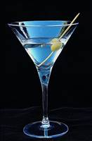

Rezepte
Bloody Mary

Zutaten:
2 cl Wodka
4 cl Tomatensaft
1 ½ cl Zitronensaft, durchgeseiht
1 Scheibe/n Zitrone(n)
1 Prise(n) Salz
1 Prise(n) Pfeffer
1 Spritzer Tabasco
1 Spritzer Worcestersauce
1 Würfel EisZubereitung:
Alle Zutaten in einem Glas verrühren und die Zitronenscheibe auflegen.
Arbeitszeit: ca. 5 Min.Caipirinha
Zutaten:
1 Limette(n)
2 EL Rohrzucker, brauner
5 cl Ginger Ale
Eis, gestoßenesZubereitung:
Die heiß gewaschene Limette vierteln und über dem Glas ausdrücken. Nun die Limette ins Glas geben und den Rohrzucker darauf streuen. Mit einem Stößel zerdrücken. Das Ginger Ale dazu gießen und mit Crushed Ice auffüllen.
Arbeitszeit: ca. 5 Min.Erfrischender Holunderbluetenlikour

Zutaten:
35 Holunderbluetendolden, voll erblüht
3 Liter Wasser
50 g Zitrone(n) - Säure
1 kg Zucker
3 Flaschen Schnaps (Korn)Zubereitung:
Die Holunderblueten am besten nach einer Schönwetterperiode mittags pflücken. Dann ist das Aroma am stärksten. Kurz ausschütteln um eventuell anhaftende Käfer zu entfernen, aber nicht waschen.
Holunderblueten, Wasser und Zitronensäure 24 Stunden ansetzen, ich nehme einen Plastikeimer mit Deckel, anschließend filtrieren. Das Filtrat mit dem Zucker und dem Korn vermischen. Ab und zu umrühren. Wenn der Zucker gelöst ist, in Flaschen abfüllen.
Arbeitszeit: ca. 30 Min.
Ruhezeit: ca. 1 TagHugo
Zutaten:
1 Glas Prosecco
½ Limette(n)
2 Stängel Minze, frisch
Holunderbluetensirup, nach Belieben
EiswürfelZubereitung:
Die Limettenhälfte in 4 Stücke schneiden. Den Saft der Limette in den Prosecco drücken. Die Stücke dann auch in den Prosecco geben. Minze, Eiswürfel und Holunderbluetensirup nach Belieben zugeben (ich z.B. mag es lieber etwas süßer).
Arbeitszeit: ca. 5 Min.Martini Cocktail

Zutaten:
7 cl Gin
1 cl Wermut, weiß
1 Oliven (mit Stein)Zubereitung:
Gin und Wermut mit Eiswürfeln im Rührglas verrühren und durch ein Sieb in ein Martiniglas gießen. Mit Olive garnieren.
Arbeitszeit: ca. 2 MinMojito
Zutaten:
6 Zweig/e Minze
1 Limette(n)
1 TL Rohrzucker, feiner, weißer
6 cl Rum, weißer
Eis, zerstoßenes
n. B. SodawasserZubereitung:
Fünf Minzezweige ins Cocktailglas geben. Limette halbieren und den Saft beider Hälften an einem Messer über dem Glas ausdrücken. Zucker ins Glas streuen, den Rum abmessen, dazugießen und das ganze Gemisch zerdrücken. Zerstoßenes Eis hinzugeben und mit Sodawasser auffüllen. Alles mit einem Teelöffel verrühren und den letzten Minzezweig am Glasrand dekorieren.
Arbeitszeit: ca. 5 MinNimm 2 - Likour mit Multivitaminsaft

Zutaten:
1 Tüte/n Bonbon(s) (Nimm 2)
0,7 Liter Schnaps (Korn)
1 ½ Liter Saft (Multivitaminsaft)Zubereitung:
Die Bonbons auswickeln und in eine große Schüssel geben. Mit dem Korn übergießen und zugedeckt über Nacht ziehen lassen.
Dann den Multivitaminsaft hinzugeben und noch mal einige Stunden stehen lassen. Dann abfüllen und am besten kalt genießen!
Arbeitszeit: ca. 10 Min.
Ruhezeit: ca. 1 TagPina Colada

Zutaten:
3 cl Rum, weiß
2 cl Rum, (Meyer´s Rum)
3 cl Sahne
2 cl Kokossirup
10 cl Ananassaft (Direktsaft)
EisZubereitung:
Glas: Hurricane
Alle Zutaten mit 3 Eiswürfeln shaken und in das Glas mit zwei Barlöffeln Crushed Ice abstrainen
Dekoration: ein halber Ananasring und eine Stielkirsche am Glasrand
Arbeitszeit: ca. 5 Min.Titanic Bowle

Zutaten:
1 Flasche Wodka, oder Bacardi
1 Flasche Gin
1 Flasche Likour (Bols Blue)
2 Flaschen Ananassaft
2 Flaschen Saft (Bananen-)
2 Flaschen Maracujasaft
2 Dose/n Mandarine(n)
1 Dose Pfirsich(e), kleine Stücke
1 Dose ErdbeerenZubereitung:
Die Dosenfrüchte abtropfen lassen, der Saft kann anderweitig verwendet werden.
Alle Zutaten in ein Gefäß geben, das 10 Liter fassen kann. Ein großer Topf oder eine große Schüssel sollten genügen. Zur Not geht auch ein simpler Plastikeimer.
Dann die Bowle ein paar Stunden ziehen lassen und genießen.
Man kann das Getränk auch als einzelnen Cocktail servieren. Hierfür jeweils 2 Pinnchen jeder Schnapssorte in ein 0,5 Glas füllen und zu gleichen Teilen mit dem Saft aufgießen. Je nach Geschmack mit Früchten verzieren.
Arbeitszeit: ca. 10 Min.Weihnachts - Gluehwein

Zutaten:
1 Liter Wein, rot, fruchtig
¾ Liter Wasser
200 g Pflaume(n) (Dörrpflaumen)
¼ Liter Rum
2 Zitrone(n), davon den Saft
250 g Zucker
2 Stange/n Zimt
2 Beutel Tee, schwarzen
5 Gewürznelke(n)
½ Liter Orangensaft, frisch gepressterZubereitung:
Wasser und Dörrpflaumen kurz aufkochen, die Teebeutel hineingeben und 5 Minuten ziehen lassen. Teebeutel entfernen und alle Flüssigkeit mixen. Die Zimtstangen und Nelken ( in ein Teeei ) dazu geben. Die restlichen Zutaten ebenfalls dazu geben. Nicht mehr aufkochen, sondern nur mehr auf kleiner Hitze wärmen. (warm halten)
Arbeitszeit: ca. 10 Min.